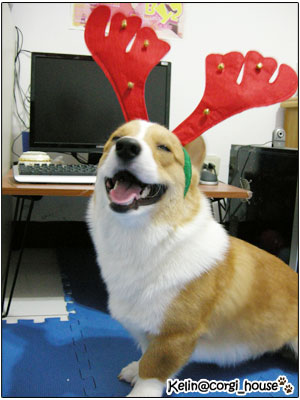
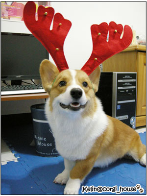
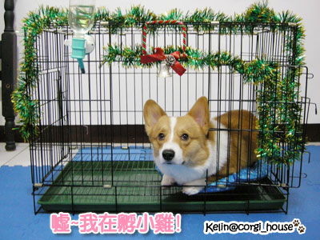
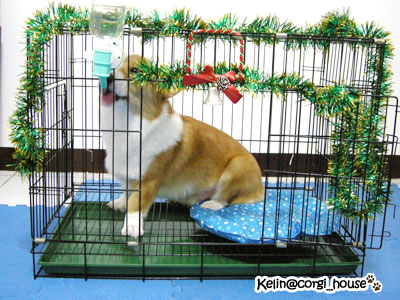
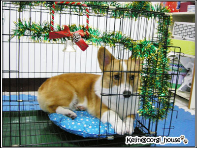

Merry X'mas！我是開心的小糜鹿....
Merry X'mas！我是開心的小糜鹿....

聖誕節快到嘍！是麻麻最喜歡的節日~也是最喜歡的季節!!冰冰冷冷的實在是太舒服啦! 
上上禮拜去師大夜市晃晃!!看到了店家都開始展示聖誕週邊商品
看中了這副小糜鹿髮窟~而且才幾十塊而已! 真便宜耶~
真便宜耶~
買回來給摩卡卡玩一下!!

也買了5塊錢的聖誕帽~不過太大了!還要加工一下..
還有兩條裝飾的彩帶! 1紅1綠
拿來幫摩卡卡的家佈置了一下!! 其實只是隨隨便便掛上去而已啦!
其實只是隨隨便便掛上去而已啦! 
小鬼一進去就擺了個奇怪的姿勢!!
很像在孵蛋!? 哈哈哈 

而且剛好在阿嬤的倉庫裡挖到寶!!!! 掛在門中間的漂亮"小鈴噹" 
很精緻歐!!!立刻a走不給阿嬤拿去賣!!!
摩卡卡只要進進出出去喝水大頭都會碰到小鈴噹~就會發出"噹噹噹"的聲音!!

不過看他的臉~我知道一沒注意他~他一定會把彩帶咬下來扯個希爛 
所以不在家的時候我會把它拆了!!收起來
才不會給你機會破壞咧!!!
  雖然還沒到!!!摩卡卡先預祝大家 聖誕節跨樂歐!!!
雖然還沒到!!!摩卡卡先預祝大家 聖誕節跨樂歐!!!
在新訓的葛哥~~也要加油忍耐呀!!!